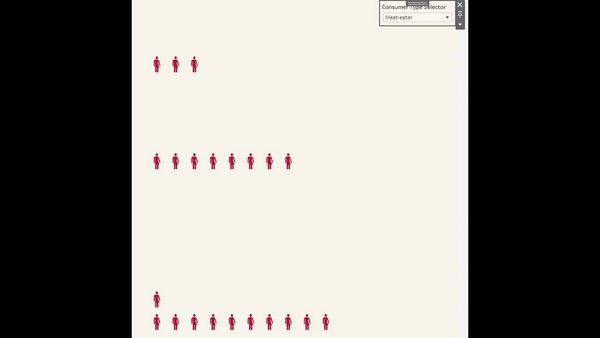
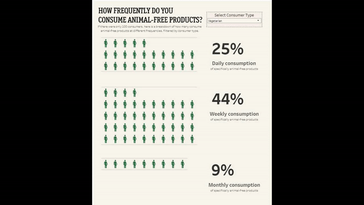

Have you ever seen percentages for a population or for those who took a survey and wondered just how many people the percentage was talking about? Or maybe the number seems so large, that it’s difficult to put it in perspective?
Shapes in Tableau can help. Here’s a tutorial that shows how to basically say, “if there were actually only 100 people in this data set, then this is how many would do X as opposed to Y.”
Waffle Chart Set up
Here’s the basis of how to get started. This here shows that I connected a waffle chart template as referenced in previous posts along with the data set. From the waffle chart template, I placed the Row field on the Rows shelf and the Column field on the Columns shelf.
For this particular data set, it involved coming up with proportions for daily, weekly, monthly and more consumption of animal-free products. For the sake of this tutorial, you’ll see just one of these charts and what had to take place to make it work.
So I right clicked, created a calculated field, and then typed in this syntax. It basically says that if my data value exceeds a percentage value from the waffle chart template, then show it.
Shapes
This boolean T/F calculated field was then placed on the Shapes of the Marks Card. From there we can click on the Shapes to change the shapes to be something else. The “True” shape will be a person shape that shows up out of box with Tableau. We won’t worry about the “False” shape quite yet.
I adjusted the size a bit and scooted the distributions of the people shapes to be closer together. Because we don’t want the “False” shapes showing at all, I then placed that same calculated field I just created onto the Filters shelf to filter for only “True.”
Just for now I placed the Category field also on the Filters shelf to filter by the consumer type. It will then only show the percentage of Vegan people who consume animal-free products daily. Without this filtering, the percentages can get goofy. Later on, I’ll show how to let the viewer pick out what they want to filter with just a click.
Tool Tips
I briefly moved on to tool tips to format a bit better. Be careful here because if you don’t put the right field in the tool tip, it’ll accumulate percentage numbers in the dynamic tool tip. We want it to show the correct percentage no matter where you hover. Shown below is simply the “percentage,” which isn’t the right field to use.
Here’s the actual percentage field we need. In this case it was the “Daily” field that was formatted to read like a percentage.
.png)
Parameters & Actions
As mentioned previously, there is a way to let the viewer pick out how they want to filter and view things automatically. We could have certainly left a filter on the dashboard, but I happen to like parameters & parameter actions for use cases like this.
I right clicked on the left side and selected Create Parameter. From there I populated the prompt as shown so it would give the viewer options to pick from.
On the dashboard itself, I went to Dashboard > Actions to create a parameter action. What this action will do is affect what gets filtered based upon user user selection.

To put it altogether, we need a calculated field on the worksheet to do the filtering for us. So now, instead of the Category field on the filter, we will put this particular calculated field here instead. This calculated field basically says to show whatever is selected from the parameter we created.
We set the “Consumer Filter” to be “True” so it will filter and show only exactly what the viewer selects in the parameter and nothing else. Here’s what I mean.

This same calculated field can be used on other worksheets as well.
Annotations
In this case, I used it to show an exact percentage as an annotation that will go on the dashboard. Because the Consumer Filter calculated field was also placed on the Filters shelf, the percentage shown below will also change with the parameters and parameter actions for the viewer. Here I have the “Daily” field formatted as a percentage and placed on the Text of the Marks card on a new worksheet.
Here’s the start of the layout for these percentages next to the corresponding people shapes.
The Final Data Visualization
Here’s how the final data visualization turned out. Because the exported image looks a little derpy, here is the link to the interactive data visualization and below this is a gif showing how it works.
